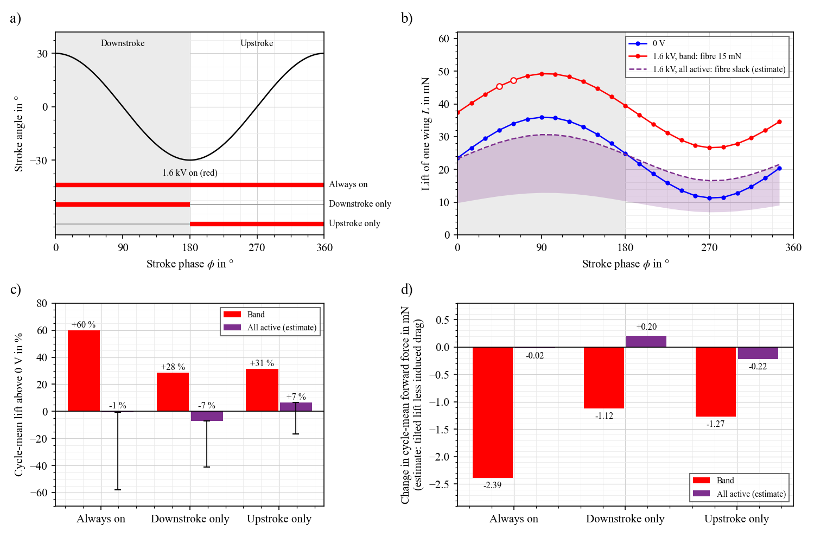
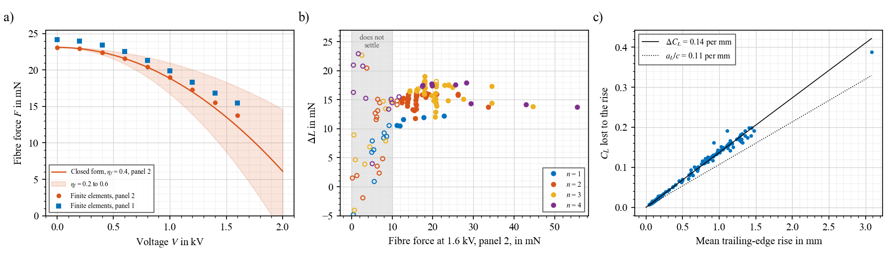
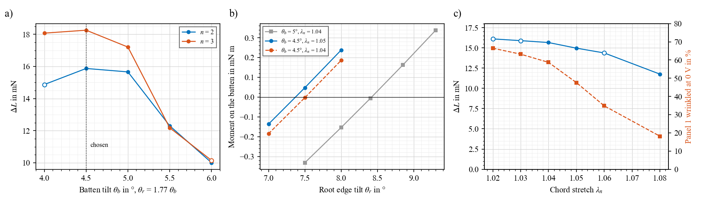
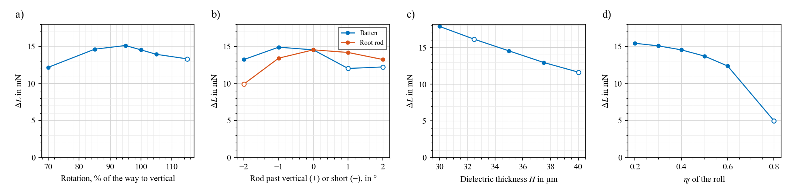
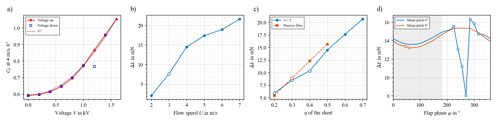
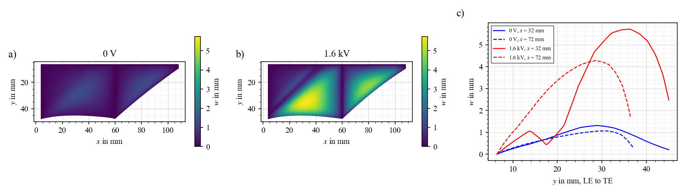
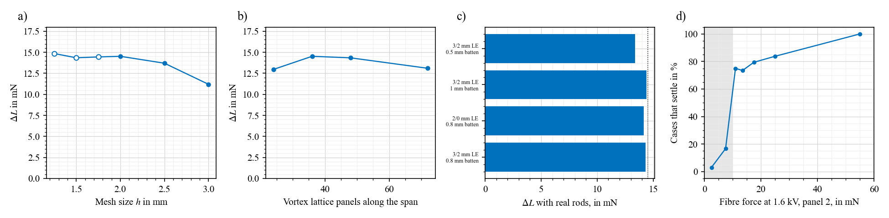

Two active layers, cut tilted, with an active rolled trailing edge. Bring the root edge and batten to vertical with one line, and the wing is tensioned. Voltage then lets the sheet go slack, and it bulges into more lift.
Update, 5 Nov 2026, 22:40: the wing that was built (B-cube, 2 electrodes, 23 mm roll) has an active roll, unlike the passive roll designed here, and it is what moves the edge. See Results and B-cube robot.
Model predictions, nothing built yet. Sheet $\eta$ = 0.5 and roll $\eta_f$ = 0.4 are not measured on this stack. Expect about 15 ± 1.5 mN (+81 %) at 4 m/s for those values, and about 10–12 mN at $\eta$ = 0.4.
Start here: the first build
Build one 6 cm panel, from the root plates of the passive mask: half the electrodes and no seam. Estimate from flat-plate scaling, not a separate run: lift about 11 → 20 mN, a change of about 9 mN, 374 mg of film.
Three electrodes, A, B, A: 105 µm. Both outer electrodes share a polarity, so they can be grounded.
Keep the spare rectangle. On the root plate it is 20.6 mm wide with the electrodes overlapping over 33.9 mm, so it rolls into a fully active coupon from the same batch. With three electrodes the force drop at 1.6 kV is about $75\,\eta_f$ mN. That measures $\eta_f$, which decides the edge for the full wing.
Lock the tip rod at vertical. With no second panel it takes a one-sided pull, likely about the root's 3.4 mNm. Use about 1 mm rod.
Locate everything with stops:repeatability. Rod angle, where the roll stops and layer thickness matter most.
Build three the same way before changing anything. Their spread is your real tolerance.
How far to trust this page
Trust
What
Fairly solid
Mask geometry and fit; the direction and rough size of trends: layers, tilt, stop short of vertical. Measured data shown as measured
Model only
Absolute mN and %: they depend on $\eta$, $\eta_f$ and whether $C_L$ above 0.9 is reachable. The percentages have never been tested on this kind of wing
Rough estimates
The 6 cm numbers, the thread edge, fully active fibre, gated forward force, tolerance limits
Not modelled
Tearing, adhesive, hinge friction, flutter, response time
The design
Choice
Value
Why, in one line
Active layers
$n$ = 2: ½D, E, D, E, D, E, ½D. 105 µm
Most lift change per mass. A third adds 14 % for 33 % more mass
Tilt as cut
Batten 4.5°, root edge 7.5°
Gives the tension. The batten stays balanced. Past 5° the lift change drops fast
Chord stretch
$\lambda_n$ = 1.05: chord 39.1 mm as cut, 41.1 mm on the rods
Panel 1 46 % wrinkled at 0 V against 57 % at 1.04, for 3 % less lift change
Rolled strip
$w_s$ = 20 mm, both panels
Largest that fits the 60 mm coater on panel 1 (59.1 mm)
Active band
$w_e$ = 5 mm, next to the sheet
Fibre keeps about 75 % of its force at 1.6 kV if $\eta_f$ = 0.4. If $\eta_f$ is lower, the band does less
Batten position
$x$ = 60 mm
10.6, 15.7, 15.7, 13.5 mN at 55, 60, 65, 70 mm
Rods
LE 3/2 mm tube, batten and root rod 0.8 mm
With real rods: 14.3 mN. LE bends 0.012 mm, batten 0.1 mm
Tension
Line on the root rod, about 81 mN
Fibres 4.7 % and 4.5 % longer, force 24 and 23 mN
Predicted, one wing, 4 m/s, 6°
$C_L$, 0 V → 1.6 kV
Lift change
Fibre force, panel 1 / 2, 0 V → 1.6 kV
Film mass
$n$ = 2, 5 mm active band
0.59 → 1.08
15.2 mN, +81 %
24 / 23 → 18 / 17 mN
637 mg
Same mask, passive fibre
0.59 → 1.09
15.7 mN, +84 %
24 / 23 → 25 / 24 mN
637 mg
Same mask, $n$ = 3, 5 mm band
0.53 → 1.08
17.3 mN, +104 %
32 / 31 → 22 / 21 mN
849 mg
Correction, film count. A roll has $n$ active films, not $n+1$. The join of the two half layers only acts if the outer electrodes differ, so with an even electrode count, and only where the band faces itself one turn in. A 5 mm band is about one turn: 3 electrodes give 2 films, 2 electrodes 1.23, 4 electrodes 3.0. The table above is corrected. Plots and numbers further down still use the old count, which is the same as 3 electrodes with a 7.5 mm band (14.5 mN, fibres 15 and 14 mN). Lift barely changes, because fibre force matters little in this range.
Finite elements. Over a stroke at 4 m/s and 2 Hz: 14.3 mN at 8° mean pitch (13.2–15.4 mN), 14.0 mN at 6°, where seven phases around mid-upstroke do not settle. The simple model gives $C_L$ 0.60 → 1.06 and 14.9 mN at this point, close, but it has no fibre term (below).
The mask does not fix the number of layers. Two or three layers use the same masks and tilts: electrode A, B, A for two layers, A, B, A, B for three. So the mask can be cut now, and layers decided later.
Sizes: panel 1 59.1 × 59.4 mm, panel 2 51.8 × 60.7 mm, both inside the 60 mm coater limit. Fibres 54.0 and 58.7 mm as cut. Holes clear by 7.6 mm, and the plate edge and notch by 7.3 mm.
Rolling: roll from the free edge towards the sheet. The 15 mm passive core goes first, so the core has no electrode to crack. The band ends up as the outer turn: a 20 mm strip of 105 µm rolls to about 1.6 mm diameter, so about 5 mm per turn.
Spare rectangles are kept from your original mask. Cut them off before bonding.
Check against your plates before cutting. Margins (2 mm at the LE, 1.5 mm at batten and root) are judgement, not modelled.
The air load pushes the sheet up by a height $A$. Tension $T$ resists it, and the air's softening $D$ helps it. Lift grows with $A$. So less tension, more lift, and that is all voltage does here.
At 0 V the sheet is taut, so a thicker stack bulges less, and lift falls. At voltage it is slack, so only its stretching stiffness $K$ holds it, and that enters as a cube root. So more layers lower the 0 V lift, and hardly change the 1.6 kV lift. Lift change is the gap between the two. The finite elements give $C_L$ at 1.6 kV of 1.02, 1.05, 1.07, 1.07 for $n$ = 1 to 4, and 0.75, 0.59, 0.53, 0.50 at 0 V.
The sheet is cut unstretched. Its fibres are too short for the vertical frame, so bringing the edges to vertical stretches them. Closed form: 1.040 and 1.043. Finite elements, with the chord stretch included: 1.047 and 1.045. No grips, and nothing stretched while rolling or bonding the LE.
4. Active fibre: stretch gives force, the band takes some away
$F_0$ grows with the strip's whole width, and $\Delta F$ only with the active band. Both grow with layers, as $H+H_p=(n+1)H$, so layers nearly cancel ($n_f$ is the number of active films in the roll), and $F>0$ needs only
$$\frac{w_e}{w_s}<\frac{2C_1(\lambda-\lambda^{-2})}{\eta_f\varepsilon_0\varepsilon_r(V/H)^2}$$
At the design, the right side is 0.51, and $w_e/w_s$ = 0.25. Numbers for panel 2: $F_0$ = 23.1 mN, and the finite elements give the same; $\Delta F$ = 10.9 mN, and they give 9.4 mN, because the sheet moves the fibre at voltage. This is why the earlier active design failed: its band took 80 % of a 13 mm strip.
5. The fibre holds the edge down
$$\begin{aligned}\bar z_{TE}&=\frac{q\,C_L\,\ell\,a^2}{12\,(F+n_x\ell)}\\\Delta C_L&\approx-0.14\ \text{per mm of}\ \bar z_{TE}\end{aligned}$$
The edge is a string of span $a$, pulled by $F$, and lifted by the air load on the strip $\ell$ next to it. The same strip of sheet adds its span tension $n_x$. Rising, the edge lowers the angle of attack, like a sail twisting off. One fitted length, $\ell$ ≈ 10 mm, matches 206 finite-element states with correlation 0.985, and the lift loss is close to the flat wing's $a_L/c$ = 0.11 per mm. So a softer fibre releases the sheet a little, and loses angle. The two nearly cancel, which is why an active fibre about equals a passive one.
Edge options
In the model the edge only needs a force, $\bar z_{TE}\propto qC_L\ell a^2/(F+n_x\ell)$, so a passive edge can be much lighter than the roll, which is 43 % of the film. An active edge only earns its place as a control input, which is what your vocal cords need. Their fibre is the output. On a wing, the sheet is.
Edge, both panels
Roll diameter, tight
Tab area
Film mass
Status
20 mm strip, passive
1.64 mm
96 mm²
637 mg
The first build. 15.7 mN in the model
10 mm strip with about 0.13 mm TPU thread in the core
1.16 mm
48 mm²
about 503 mg
Next, for lift per mass. Estimated, not run. Measure the thread first: creep, and force at 4.7 %
3 mm hem with thread, 20 mm tabs at the ends
0.63 mm, 1.64 mm at ends
96 mm²
about 450 mg
Uneven roll, corners can tear
Fully active 20 mm roll, 3 electrodes
1.64 mm
96 mm²
637 mg
If you want the edge as a control
Fully active: why $\eta_f$ decides
Over the whole strip, width and layers cancel: $F=F_0(1-V^2/V_c^2)$, with $V_c\propto\sqrt{(\lambda-\lambda^{-2})/\eta_f}$.
$\eta_f$
$V_c$, all films active (2 or 4 electrodes)
Force left at 1.6 kV
$V_c$, 3 electrodes
Force left at 1.6 kV
0.4, assumed
1194 V
slack
1462 V
slack
0.2
1689 V
2.5 mN
2068 V
9.7 mN
0.15
1950 V
7.9 mN
2388 V
13 mN
0.1, near the vocal cord fits
2388 V
13 mN
2925 V
17 mN
Reading: working joins make a fully active fibre go slack sooner, so 3 electrodes suit it best. At 13–17 mN the edge law estimates +74 to +81 % at 6°, close to passive. Below about 10 mN the model does not settle, so it cannot say what happens.
Validate: the coupon, force against voltage. 10 mN or more left: go fully active. Close to slack: partial band, or about 9 % stretch at $\eta_f$ = 0.4.
Voltage over part of the stroke

Equation: mean lift is $\overline{L}=\tfrac{1}{2\pi}\int L\,d\phi$, with $L=L_{1.6\,kV}$ while on and $L_{0}$ while off. Forward force, estimated: $L\,\Omega r/U-L^2/(qS\pi AR)$, leaving out profile drag. Fully active: edge law with $F$ = 0, so it applies at $\eta_f$ = 0.4.
Trend: the band adds about the same lift at every phase, so half a cycle gives about half: corrected count +63 % always on, +30 % downstroke only, +33 % upstroke only. Passive: +65, +31, +34 %. Downstroke-only costs about half the induced drag of always on, and keeps the upstroke taut, where states at 6° settle least.
Limit: the plot assumes instant switching. Your vocal cord device took 0.13–0.19 s to rise and 0.17–0.30 s to fall, and half a stroke at 2 Hz is 0.25 s. If the wing is as slow, perhaps a third of the effect lands in the wrong half stroke. The cause of that delay is unknown.
Validate: the same wing at 0 V, always on, downstroke only and upstroke only, randomised, with a recorded voltage trace.
Corrected film count, 5 mm band: 9.5, 15.2, 17.3 mN for $n$ = 1 to 3, or +40, +81, +104 %, and 22, 24, 20 mN/g. So $n$ = 2 still leads per mass. With a passive edge: +44, +84, +105 %.
Trend, old count: a) 8.4, 14.5, 16.9, 18.0 mN for $n$ = 1 to 4. b) The upper curve is flat, and the lower curve falls with diminishing returns. c) Per mass, $n$ = 2 is best: 19.9, 22.8, 19.9, 16.9 mN/g. The line force grows steadily: 54, 81, 108, 135 mN.
Why not 3: 17 % more lift change, for 33 % more mass and 33 % more line force, and one more cycle in which something can fail. Worth trying second, on the same mask. If stall really caps $C_L$ near 0.9–1, more layers help relatively more, as they lower the 0 V end: reason to build $n$ = 3 if $n$ = 2 shows a clear cap.
Validate: $n$ = 2 and 3, same mask, static tunnel, $C_L$ at 0 V and 1.6 kV. The 1.6 kV value should barely change, and the 0 V value should fall.
What the active fibre does

Equation: 4 for a), 5 for c).
Trend: a) force falls as $V^2$, from 23 to 14 mN. b) Hollow points did not settle. Below about 10 mN at voltage almost nothing settles: 1 of 60 cases. From 12 to 20 mN most do, and above 20 mN all do. The numbers in the shaded band are not usable. c) Each mm of edge rise costs $C_L$ 0.14.
Honest result: an active fibre gives no extra lift on this outline: 14.5 mN against 15.7 mN passive, 7 % less, with $n$ = 1 to 4 all within 0–20 %. Fibre alone, with the sheet off: at 10° tilt it gave 0.09 mN. What active gives is a wing whose edge relaxes at voltage, your vocal-cord architecture, and a second measurable signal. If lift alone matters, use the passive mask: same outline.
Is the limit physical? Unknown. Steady relaxation cannot say whether a state that does not settle would flutter or only needs a better solver. Treat 10 mN as a limit to stay clear of, and watch the edge on the first build.
Validate: at 0 V and 1.6 kV, high-speed video of the edge in flow, against $\bar z_{TE}$ = 0.2 and 1.3 mm.
Tilt, balance, chord stretch

Equation: 3, then 1. More tilt means more tension, so less for voltage to do.
Trend: a) flat up to 5°, then falling fast: 15.9, 15.7, 12.3, 10.0 mN at 4.5, 5, 5.5, 6° for $n$ = 2. So 4.5° sits on the flat part, with margin. b) The moment on the batten is zero at $\theta_r$ = 7.4°, for $\theta_b$ = 4.5°. A wider roll moves the balance: the earlier rule of 1.77 becomes 1.67 here. Slope: about 0.38 mN m per degree of root tilt. c) Lift change falls gently and wrinkles fall quickly: 59, 48, 35, 18 % at $\lambda_n$ = 1.04, 1.05, 1.06, 1.08.
Validate: a) markers on the fibres. b) Release the batten's hinge on the built wing: it should stop near vertical. c) Photograph the sheet at 0 V.
Trend: a) 12.2, 13.6, 14.5, 15.1 mN at 16, 18, 20, 22 mm. Below about 16 mm the fibre force falls under the limit, and lift change collapses. b) 15.4, 15.2, 14.5, 13.5, 11.6 mN at $w_e$ = 2.5, 3.5, 5, 6.5, 8 mm: no gain from a wider band. c) The closed form: with $\eta_f$ up to 0.6 the fibre force is about 7 mN at 5 mm if the edge does not move; the finite elements keep it at 9 mN, and it still settles.
Why 5 mm, not 2.5 mm: a smaller band loses less lift, but the drop would be small to measure. 5 mm drops the force by about 40 %, so it can be seen on a bench.
Validate: isometric force drop on a rolled strip: 9–11 mN at 1.6 kV predicted. This also measures $\eta_f$, for the real single-turn band.
Tolerances: what the build can get wrong

Equation: $P\propto1/H$ at fixed $V$, in step 3c of the model; 3 and 4 above.
Trend: a) 12.2, 14.6, 15.1, 14.5, 13.9, 13.3 mN at 70, 85, 95, 100, 105, 115 %. A forgiving optimum. b) 1° on either rod: 12.0–14.9 mN. Do not overshoot the batten: past vertical it did not settle. Root rod 2° short also failed to settle. c) 17.9, 14.5, 11.6 mN at $H$ = 30, 35, 40 µm: thickness matters most, so measure it. d) 15.4, 14.5, 12.3 mN at $\eta_f$ = 0.2, 0.4, 0.6; at 0.8 the fibre nears slack.
Validate: cross-section for $H$. A printed square for the rods. Line force as a cross-check: 81 mN ± 10 %.
What to expect

Equation: 1 and 2; voltage enters as $V^2$, through $P$.
Trend: a) $C_L$ rises close to $V^2$, and voltage up and down give the same state at every settled point, so no hysteresis. Between 1.0 and 1.4 kV states settle slowly: the point at 1.2 kV coming down did not settle. b) 2.2, 7.6, 14.5, 17.4, 19.0, 21.7 mN at 2, 3, 4, 5, 6, 7 m/s. c) 6.0, 8.5, 10.4, 14.5, 17.6, 20.7 mN at $\eta$ = 0.2, 0.3, 0.4, 0.5, 0.6, 0.7, nearly linear, so lift change reads $\eta$ directly. Hollow points settled slowly even after 200 000 iterations. d) at 8° mean pitch, 13.2–15.4 mN all round the stroke, with 2 of 24 phases slow to settle. At 6° it dips to 8 mN and does not settle from 225° to 315°, where the outer panel's angle reaches zero. So fly at 8°, as $\alpha>\arctan(\Phi_0 2\pi f r/U)$ = 7° asks. At 4 m/s, 1 Hz, 6°: 14.5 mN, flat. At 6 m/s, 2 Hz, 6°: 19.1 mN. At 3 m/s, 2 Hz, 8°: 7.3 mN, not settling around mid-upstroke, since that speed asks for 9.3°.
If $\eta$ turns out low, nothing breaks. The design gives less, in proportion: about 8.5 mN at 0.3, and 6 mN at 0.2. A passive fibre gives 5.5, 9.0, 12.4 mN at 0.2, 0.3, 0.4, about the same. Three layers: 9.3 mN at 0.3, 13.5 mN at 0.4. Low $\eta$ alone is no reason to change the mask.
Almost independent of pitch: 13.5–14.6 mN from 2° to 12°. Voltage shifts the $C_L(\alpha)$ line up, at any angle, so you can read it at any pitch with attached flow.
Validate: static section, 3–5 m/s, randomised, with a sham. Then the stroke.

Trend: at 0 V the peak height is 1.3 mm, and at 1.6 kV it is 5.7 mm.
Validate: stereo video with speckle, section by section.
Bench checks, in order
Stage
Measure
Expect
If not
After coating
$H$ by cross-section; mass of panel 1
35 µm; film about 637 mg for the whole wing
Rescale: $\Delta L$ moves about 0.6 mN per µm
Roll
Isometric force drop of the fully active coupon, stretched so it stays taut
$75\,\eta_f$ mN at 1.6 kV: 30 mN at 0.4, 7.5 mN at 0.1
Sets $\eta_f$, and so the edge for the full wing
Rotate root rod to vertical
Batten angle, by itself
Within 1° of vertical
Adjust root rod with the line, or fix the batten
Same
Line force; fibre stretch by markers
81 mN; 4.7 % and 4.5 %
Check cut and chord stretch
0 V, no flow
Wrinkles by photo; fibre bow
Panel 1 about 46 % in the model; bow 2.6 mm, 0.7 mm
If rough, go to $\lambda_n$ = 1.06: 35 %, 13.9 mN
0 V → 1.6 kV, no flow
Resonance of panel 1
51 → 25 Hz (simple model)
Fall gives $\eta$ on the real wing
Static tunnel, 4 m/s, 6°
$C_L$; edge motion
0.59 → 1.05; edge 0.2 → 1.3 mm, steady
Edge unsteady: use the passive mask
What is not known
$\eta$ and $\eta_f$. Not measured on this stack. The design assumes $\eta_f$ = 0.4, but fits to your vocal cord device gave 0.05–0.13, and bench cycles 0.03–0.15. The tabs are also passive, so the band acts on about 82 % of each fibre. Both make the real drop smaller than shown.
$C_L$ above about 0.9. 1.05 is above what attached flow supports at Re ≈ 12 000, so the 1.6 kV end may be capped. With a cap at 0.9, lift change would be about 10 mN.
Lattice: 13.0, 14.5, 14.3, 13.1 mN at 24, 36, 48, 72 panels along the span, with no clean trend. Hence ± 1.5 mN. Mesh: converged from 2 mm (11.2, 13.7, 14.5, 14.4, 14.4, 14.9 mN at 3, 2.5, 2, 1.75, 1.5, 1.25 mm, the finest three not fully settled).
Wrinkles: panel 1 46 % at 0 V, both panels over 50 % at 1.6 kV. The model does not know what these do to the flow.
Not simulated: the bonding sequence, hinge friction, the line over a stroke, flutter and any delay between voltage and shape.
Simple model: on this design it matches, partly by luck. Across 102 new cases its correlation is only 0.30 and its typical error 4.7 mN: it has no fibre term, and it misses the layer trend. So the finite elements chose this design. Adding the edge law and refitting six parameters reached only 3.2 mN and correlation 0.28 on held-out cases, so it was not kept.
A correction. A solver change (under-relaxed air load) first looked as if it let active-fibre cases settle. Case by case, it changed none of the 26 that could be compared. The real change was the wider roll and narrower band.

Equation: checks on steps 1–5; fibre force from 4.
Trend: a, b) as listed above. c) Real rods cost little: 14.3 mN with the 3/2 mm tube and 0.8 mm batten, 13.4 mN with a 0.5 mm batten. d) Whether a case settles depends mostly on the fibre force at voltage.
Validate: only measurement can settle $\eta$, wrinkles and the cap. Data: full_membrane/validation/active_*.jsonl, code: active_study.py, figures_design.py.